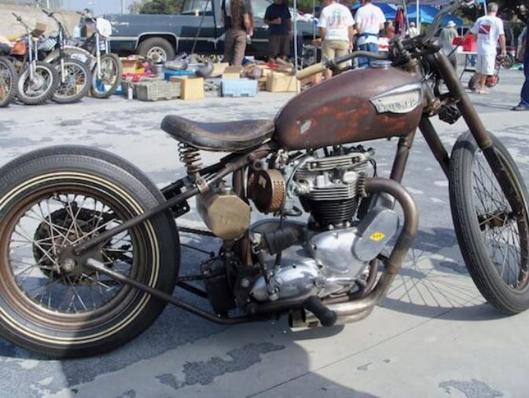

El Arte de Personalizar tu Moto Custom

Personalizar una moto custom es una forma de expresión única para los amantes de las dos ruedas.
Desde modificaciones en el chasis hasta trabajos de pintura detallados, cada moto cuenta una
historia. En esta entrada, exploraremos las mejores prácticas para personalizar tu propia moto.
Harley-Davidson: Historia y Legado

Harley-Davidson es sinónimo de libertad y rebeldía sobre dos ruedas. Desde su fundación en 1903,
ha sido una marca emblemática en el mundo de las motos custom. En este artículo, hacemos un
recorrido por la historia de esta icónica marca y su influencia en la cultura motociclista.
Top 5 Motos Custom para Empezar

Si estás pensando en adentrarte en el mundo de las motos custom, te presentamos las cinco mejores
opciones para comenzar. Desde la clásica Harley-Davidson Sportster hasta la accesible Indian
Scout, descubre cuál se adapta mejor a tu estilo y necesidades.